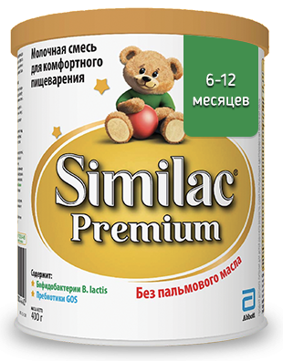

<Similac Premium 1

Similac Premium – адаптированная детская молочная смесь с уникальным составом для комфортного пищеварения малыша. Содержит пребиотики, пробиотики, нуклеотиды и не содержит пальмового масла.
1. Пребиотики (ГОС) и пробиотики (бифидобактерии bb12) помогают формированию здоровой микрофлоры кишечника.
2. Содержит нуклеотиды – универсальный строительный материал ДНК и РНК, способствует созреванию кишечника
3. Без пальмового масла, что способствует формированию мягкого стула и лучшему усвоению кальция для формирования крепких костей и здоровых зубов
Грудное молоко – лучшее питание для ребёнка, его необходимо сохранять как можно дольше. Если грудное вскармливание невозможно, педиатр поможет Вам подобрать молочную смесь, по составу и свойствам, приближенную к грудному молоку.